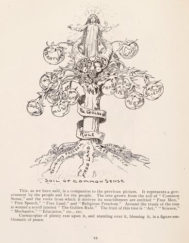

|  |
This, as we have said, is a companion to the previous picture. It represents a government by the people and for the people. The tree grows from the soil of "Common Sense," and the roots from which it derives its nourishment are entitled "Free Men," "Free Speech," "Free Land," and "Religious Freedom." Around the trunk of the tree is wound a scroll labeled "The Golden Rule." The fruit of this tree is "Art," "Science," "Mechanics," "Education," etc., etc. Cornucopias of plenty rest upon it, and standing over it, blessing it, is a figure emblematic of peace. |